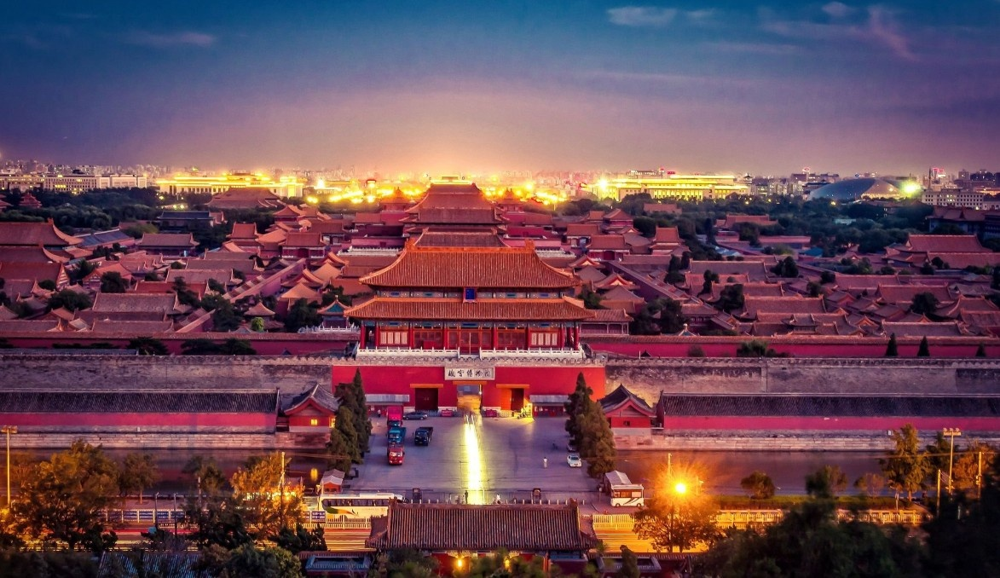
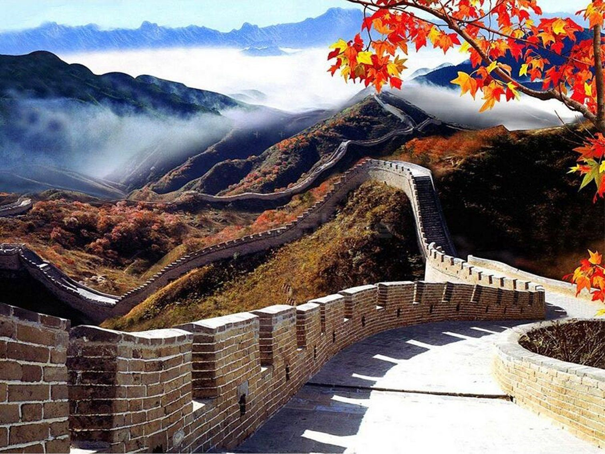
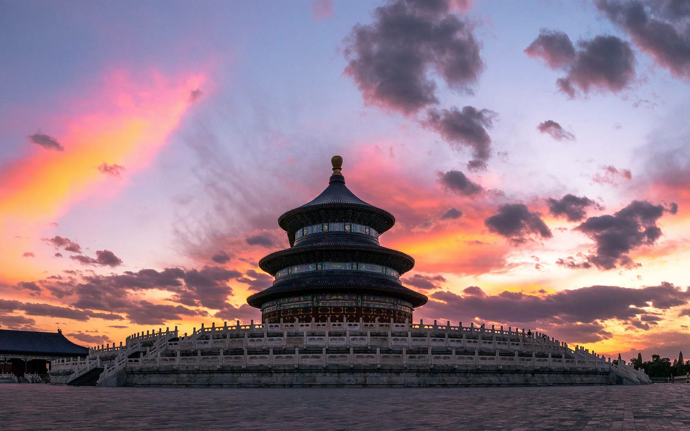

Пекин — культурное сердце Китая
Погрузитесь в магию древнего Китая: от Великой Китайской стены до Императорского дворца и современных небоскрёбов.



Главные достопримечательности
- Запретный город: Огромный дворцовый комплекс императоров династии Мин и Цин.
- Великая Китайская стена: Одно из новых чудес света.
- Храм Неба: Место поклонения и шедевр архитектуры династии Мин.
- Площадь Тяньаньмэнь: Одна из крупнейших городских площадей в мире.
Популярные маршруты
🏯 Пекин за 1 день
Быстрый тур по Запретному городу, Храму Неба и площади Тяньаньмэнь.
Цена: от 13000 ₸
🚶 Китайская стена + культура
Поездка к участку стены Мутяньюй, обед в традиционном стиле и чайная церемония.
Цена: от 25000 ₸
🏨 Премиум Пекин (3 дня)
Гид, люксовые отели, вечернее шоу кунг-фу и кулинарный мастер-класс.
Цена: от 47000 ₸
Рекомендуемые отели Пекина
- Peninsula Beijing: Роскошный отель в центре города.
- NUO Hotel: Элегантный дизайн и высококлассный сервис.
- Beijing Hotel: Классика и история с современными удобствами.